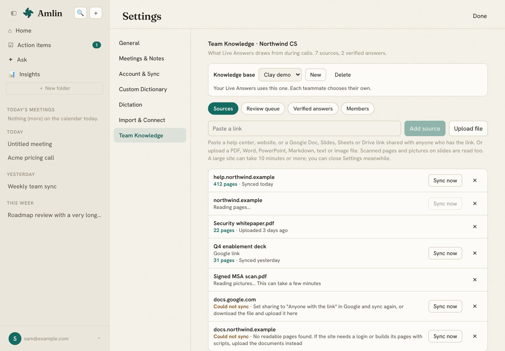
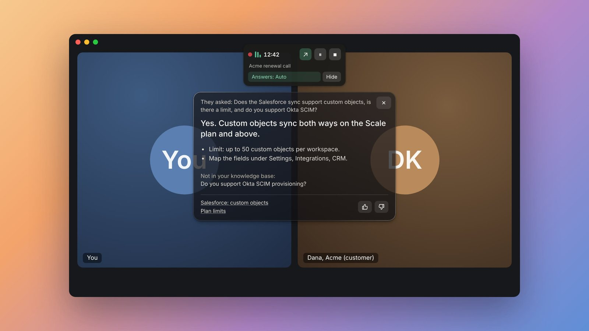
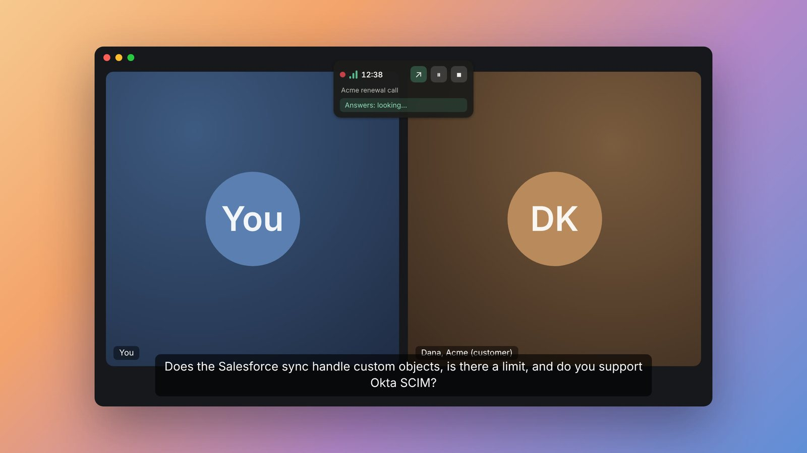
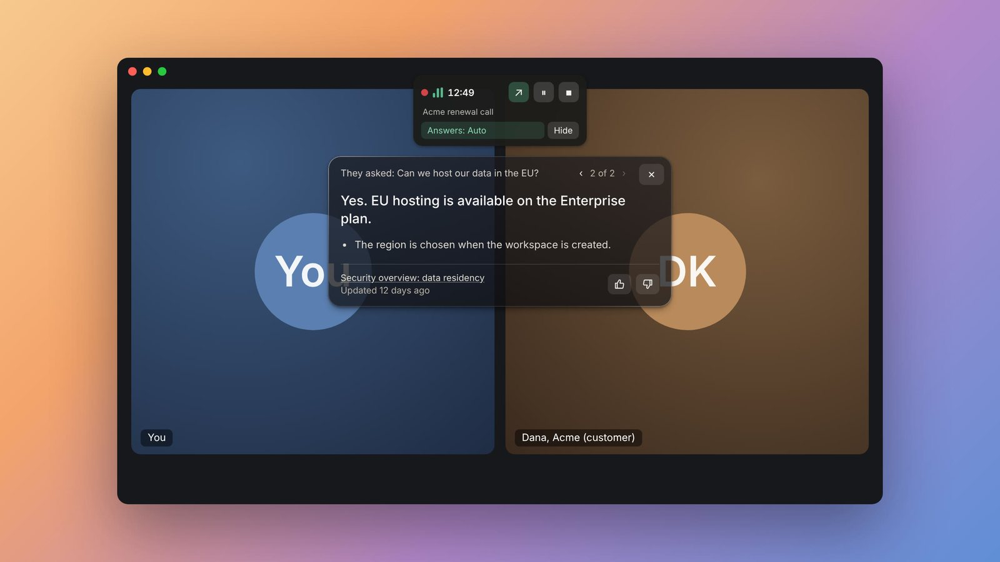
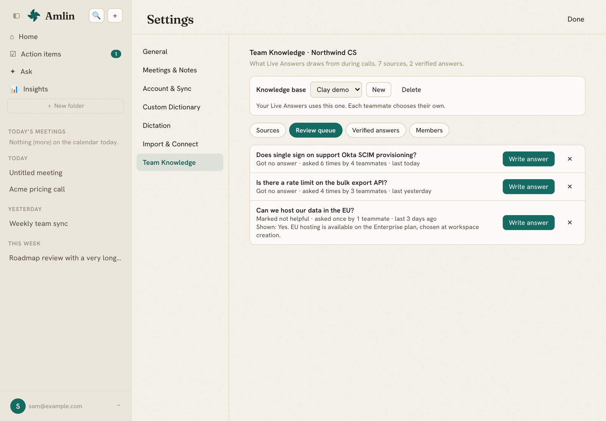
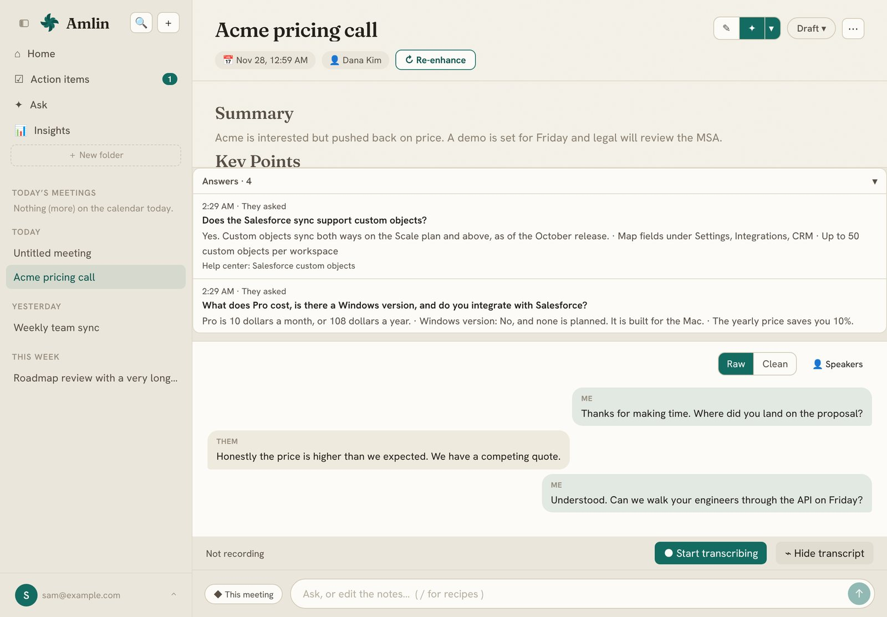

When a customer asks a product question, Amlin puts the answer on your screen in seconds, drawn from your own help center and documents. You read it and answer in your own words. Nothing joins the call.

Customers rarely ask one thing at a time. “Does the Salesforce sync handle custom objects, is there a limit, and do you support Okta?” Amlin looks up each part separately and gives you one card: an answer for each part it found, and a plain note for the part your docs do not cover.

A wrong answer on a customer call costs more than no answer. Amlin shows a line only when it can point to the exact passage in your sources that backs it up, including every number. When your docs do not have the answer, the recorder says “no answer found” and the question is saved for you to follow up on.
The recorder tells you when Amlin has caught a question and is looking, and tells you when there was nothing to find. No watching an empty screen wondering whether something is coming.


Every product question that got no answer goes into a review queue for your team’s admins, grouped and counted. You see exactly what customers ask that your help center does not cover, and you can write the answer once for everyone.

Every question and the answer you were shown is kept with the meeting notes. Questions that went unanswered become suggested follow-ups, so nothing a customer asked gets lost.

$69 per seat a month, billed yearly
or $79 billed monthly · 5-seat minimum
Everything in Pro for each person, plus Live Answers: the answer to a customer’s product question on your screen in seconds, from your own help center and documents.
Tell us your team’s name and size, and we’ll set you up.
Tell us your team’s name and how many people, and we set you up the same day. You add your sources, invite your team, and use it on real calls.
One person. Each seat gets its own 30 meeting-hours a month.
Five seats.
Recording for that person pauses until the next month. Dictation keeps working. If your team regularly needs more, talk to us.
No. Amlin runs on your Mac and listens to the call’s audio. There is nothing to install in Zoom, Meet or Teams and nothing joins the meeting.
A help center or website address, PDFs, Word and PowerPoint files, Markdown and text files, images, and Google Docs, Slides and Sheets shared by link.
Each answer shows its source and when that source was last updated, and turns amber when it is more than 90 days old. Anyone can mark an answer as not helpful, which sends it to your admins.
Yes. Someone who already pays for Pro keeps it when they join a team.